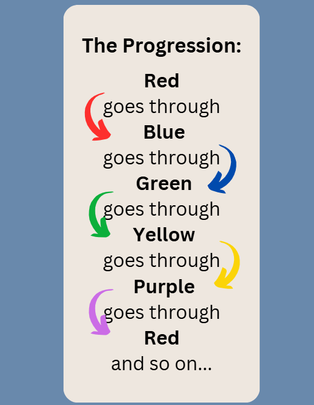

Progression Overview

Follow this progression for all game play. If playing with less then 5 players, or a player in the middle of the progression is eliminated, just skip that color in the progression.
Follow this progression for all game play. If playing with less then 5 players, or a player in the middle of the progression is eliminated, just skip that color in the progression.